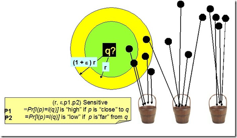

2.6k words in total, 10 minutes required. 本篇是对LSH及其相关技术的总体介绍，包括其应用场景等。 1. 概念引用自Wikipedia： Locality-sensitive hashing (LSH) is a method of performing probabilistic dimension reduction of high-dimensional data. The basic idea is to hash the input items so that similar items are mapped to the same buckets with high probability (the number of buckets being much smaller than the universe of possible input items). This is different from the conventional hash functions, such as those used in cryptography as in this case the goal is to maximize probability of “collision” of similar items rather than avoid collisions.[1]. Note how locality-sensitive hashing, in many ways, mirrors data clustering and Nearest neighbor search. LSH (Location Sensitive Hash)，即位置敏感哈希函数。与一般哈希函数不同的是位置敏感性，也就是散列前的相似点经过哈希之后，也能够在一定程度上相似，并且具有一定的概率保证。 对于集合$S$中任意点$\mathbf{q}$，$\mathbf{p}$，若从$S$到$U$的函数族$H=\{h_1, h_2, \ldots, h_n\}$ 对距离函数 $D(\cdot)$，如欧氏距离、曼哈顿距离等等，满足条件：$D(\mathbf{p},\mathbf{q}) \leq r~\text{and}~\mathsf{Pr}(h(\mathbf{p}) = h(\mathbf{q})) \geq p_1$$D(\mathbf{p},\mathbf{q}) \leq r(1+\epsilon)~\text{and}~\mathsf{Pr}(h(\mathbf{p}) = h(\mathbf{q})) \leq p_2$则称$D(\cdot)$是位置敏感的。 如下图，空间点经位置敏感哈希函数散列后：对于点$\mathbf{q}$，其$r$-NN (范围为$r$内的近邻点) 有可能散列到同一个桶 (如第一个桶) ，即散列到第一个桶的概率较大，会大于某一个概率阈值$p_1$； 而其$(1+\epsilon)r$-NN之外的对象则不太可能散列到第一个桶，即散列到第一个桶的概率很小，会小于某个阈值$p_2$。 LSH图例 2. LSH的应用 高维下近似查询：相似性检索在各种领域特别是在视频、音频、图像、文本等含有丰富特征信息领域中的应用变得越来越重要。丰富的特征信息一般用高维向量表示，由此相似性检索一般通过k近邻或近似近邻查询来实现。一个理想的相似性检索一般需要满足以下条件： 高准确性：即返回的结果和线性查找的结果接近。 空间复杂度低：即占用内存空间少。理想状态下，空间复杂度随数据集呈线性增长，但不会远大于数据集的大小。 时间复杂度低：检索的时间复杂度最好为$O(1)$或$O(\log {N})$。 支持高维度：能够较灵活地支持高维数据的检索。传统主要方法是基于空间划分的算法——tree-like算法，如R-tree，Kd-tree，SR-tree (Sphere/Rectangle-tree)。这种算法返回的结果是精确的，但是这种算法在高维数据集上的时间效率并不高。维度高于10之后，基于空间划分的算法时间复杂度反而不如线性查找。LSH方法能够在保证一定程度的准确性的前提下，时间和空间复杂度得到降低，并且能够很好地支持高维数据的检索。 分类和聚类：根据LSH的特性，即可将相近 (相似) 的对象散列到同一个桶之中，则可以对图像、音视频、文本等丰富的高维数据进行分类或聚类。 数据压缩： 如广泛地应用于信号处理及数据压缩等领域的向量量化技术 (向量量化其实就是找附近既定的点，来当作一个区间的代表，从而简化资料量)。 总而言之，哪儿需要近似kNN查询，哪儿都能用上LSH. 图像检索和ANN搜索图像检索其基本定义为给定的一个包含$n$个图像数据集，每个图像可以用一个$d$维的特征向量来描述，因此整个图像数据集就映射为$d$维空间的$n$个点，在此$d$维空间中用一个相似度度量函数来测量两个图像点之间的距离，对于任意给定的查询点$\mathbf{q}$，需要设计一个数据结构，来快速的返回距离$\mathbf{q}$最近的图像点(或者Ranking List中的多个点)。 当$d$较小时(10-20)，可采用如kd-tree，但当$d$较大时 (一个Discriminative的图像描述向量通常成百上千甚至万维)，其查询时间将随$d$指数级增长，这就是通常所说的维数灾难the curse of dimensionality，同时$d$较大时，其所需的存储空间也无法承受。因此降维和Approximation NN (ANN)算法通常会用到当前的检索系统中。 (1+ε)-approximate nearest neighbor search is a special case of the nearest neighbor search problem. The solution to the (1+ε)-approximate nearest neighbor search is a point or multiple points within distance (1+ε) R from a query point, where R is the distance between the query point and its true nearest neighbor. 给定Hash函数集合 $H = \{h_i (i = 1, \ldots, k): M^d \rightarrow S^k\}$，$M^d$是原始的$d$维特征空间，$S^k$是经hash函数集$F$散列后的$k$维空间，根据哈希函数设计的不同，可将Hashing分为data-independent和data-dependent两大类:1.data-independent hashing包括：Locality-Sensitive Hashing (LSH)，经Hash函数映射后，仍保留原始空间的距离相似度；2.data-dependent hashing包括：spectral hashing, semi-supervised hashing, Restricted Boltzmann Machine (RBM), Boosting SSC等，引入机器学习算法，基于数据分布设计Hash函数。 位置敏感哈希，其基本的思想就是通过哈希函数将输入的高维特征矢量散列至低维特征空间，并满足在原始空间中距离较近的点经过散列之后在低维空间依然距离较近，距离较近的点散列后碰撞的概率要大于距离较远的点碰撞的概率。 3. LSH方法位采样 (Bit sampling)最简单的Hash函数，仅适用于原始特征空间是binary的Hamming空间，即原始的特征向量每一维的取值为{0，1}的特征串，其Hash函数的基本思想就是随机选取$d$维特征向量中的某一维 随机投影 (random projection)随机投影方法旨在逼近向量之间的余弦距离，其Hash函数设计的基本思想是：定义一个随机超平面$(\mathbf{w},b)$，它可看做分别是超平面的斜率和截距(参照二维平面中直线的定义)，超平面将整个原始的特征空间划分为两部分 (平面的两侧)，用{0, 1}表示，则Hash函数的映射过程为： $w$是$d$维的法向单位向量，即$||w||_2 = 1$，每一个不同的$w$即定义一个超平面(可令$b = 0$)。 可证明两个向量经哈希函数散列后碰撞的概率和其在原始空间的余弦距离成正比，即$\mathsf{Pr}(h(\mathbf{p})=h(\mathbf{q})) = 1-\frac{\theta(\mathbf{p},\mathbf{q})}{\pi}$，其中$\theta(\mathbf{p},\mathbf{q})$表示夹角，$1-\frac{\theta(\mathbf{p},\mathbf{q})}{\pi}$和余弦距离成正比。 稳态分布 (stable distributions)若随机变量线性组合的分布与随机变量乘一个$L_p$归一化系数服从同一分布，则此分布即为稳态分布。其Hash函数设计的基本思想也是定义一个随机超平面，不同于随机投影之处在于，Hash函数将$d$维的特征矢量散列到$[0,r]$之间的一个整数而不是{0, 1}二值码，其Hash过程： $w$是$d$维向量，每一维都是一个随机变量，各维之间独立同分布，服从一个稳态分布，b是一个$[0,r]$间均匀分布的随机变量。 稳态分布的定义： A distribution $D$ over $\mathbb{R}$ is called p-stable, if there exists such that for any $n$ real number $v_1, \ldots, v_n$ and i.i.d. variables $X_1,\ldots,X_n$ with $D$ distribution, the random variable $\sum_i v_i X_i$ has the same distribution as the variable $(\sum_i|v_i|^p)^{\frac{1}{p}}X$ where $X$ is a random variable with distribution $D$. 对于$p \in (0,2]$，都存在一个稳态分布, 两个常用的稳态分布： Cauchy distribution: 1-stable即L1稳态，概率密度函数为$c(x) = \frac{1}{\pi}\frac{1}{1+{x}^{2}}$ Gaussian distribution: 2-stable即L2稳态，概率密度函数为:$g(x)=\frac{1}{\sqrt{2\pi}}{e}^{-{x}^{2}/2}$ 由稳态分布的性质，我们可以看出基于稳态分布Hash函数设计的思想： $\mathbf{w} \cdot \mathbf{x}$将$d$维的向量$\mathbf{x}$映射到一条直线。若将此直线划分为$r$大小等间隔的段，则哈希函数$h(\mathbf{x})$将向量$\mathbf{x}$映射到直线的某一段； $\mathbf{w}$中每一维都是一个稳态分布的变量，因此$\mathbf{w} \cdot \mathbf{x}$是稳态分布变量的线性组合，因此$\mathbf{w} \cdot \mathbf{x}$的分布等价于${|\mathbf{x}|}_{p} \cdot \mathbf{w}_i$的分布； 由此，可得出对于两个原始空间的向量$\mathbf{x}_{1},\mathbf{x}_{2}$，其映射后的距离为$(\mathbf{x}_{1}-\mathbf{x}_{2}) \cdot \mathbf{w}$，其分布等价于${|\mathbf{x}_{1}-\mathbf{x}_{2}|}_{p} \cdot w_i$的分布，${|\mathbf{x}_{1}-\mathbf{x}_{2}|}_{p}$是原始空间向量$\mathbf{x}_{1},\mathbf{x}_{2}$之间的距离，只需证明$\mathsf{Pr}(h(\mathbf{x}_{1})=h(\mathbf{x}_{2})) \propto 1/{|\mathbf{x}_{1}-\mathbf{x}_{2}|}_{p}$，即两个向量经Hash函数映射后碰撞的概率反比于两个向量之间的$L_p$距离。 令$c={|\mathbf{x}_{1}-\mathbf{x}_{2}|}_{p}$，$p(c)=\mathsf{Pr}(h(\mathbf{x}_{1})=h(\mathbf{x}_{2}))$，则对于上述两个稳态分布，可得出： Cauchy distribution: Gaussian distribution:$norm(\cdot)$是正态分布$N(0,1)$随机变量的累积分布。 更多技术细节参照系列第四篇。 继续阅读系列下一篇，将会对LSH的形式化进行进一步说明。 ← Previous Post Next Post→ Table of Contents 1. 概念2. LSH的应用图像检索和ANN搜索3. LSH方法位采样 (Bit sampling)随机投影 (random projection)稳态分布 (stable distributions)